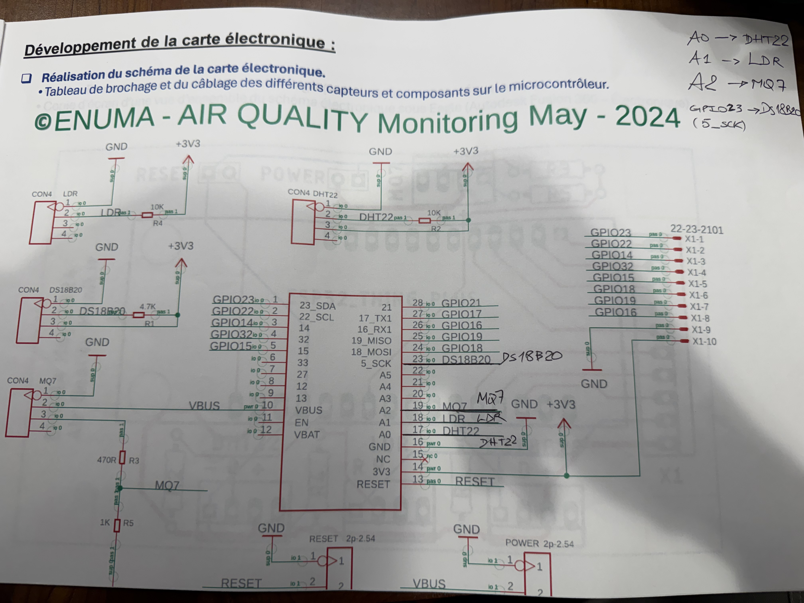
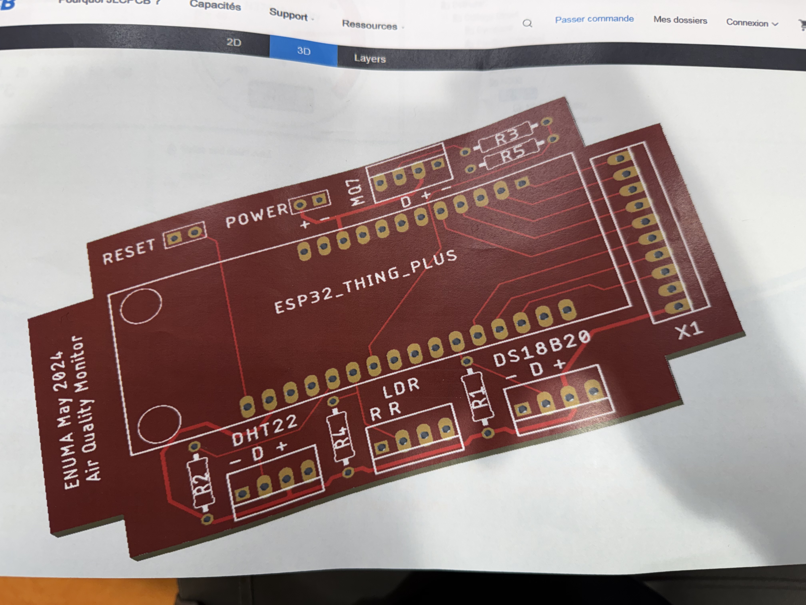

Air Quality Index Monitoring System
Système embarqué de surveillance de la qualité de l'air en temps réel — ESP32 Thing Plus, capteurs multi-paramètres, transmission MQTT/TLS, backend FastAPI et tableau de bord web.
Schéma de câblage
Brochage ESP32 — DHT22 · LDR · MQ7 · DS18B20

© ENUMA — Air Quality Monitoring · Mai 2024 · Réalisation du schéma de la carte électronique
Rendu 3D du PCB
EasyEDA — Vue 3D de la carte imprimée

© ENUMA — Air Quality Monitor · Mai 2024 · Vue 3D générée avec EasyEDA / EasyPCB
ESP32
Thing Plus
Microcontrôleur Wi-Fi/BT · 240 MHz · 4 MB Flash
DHT22
Température & Humidité · A0 (GPIO17) · 3.3 V · R2 10 kΩ
LDR
Luminosité · A1 (GPIO18) · Diviseur R4 10 kΩ
MQ7
CO / Gaz · A2 (GPIO19) · VBUS · R3 470 Ω · R5 1 kΩ
DS18B20
T° numérique 1-Wire · GPIO23 (5_SCK) · R1 4.7 kΩ
Firmware ESP32
Backend Python
Infrastructure